Korean 10-step skincare routine
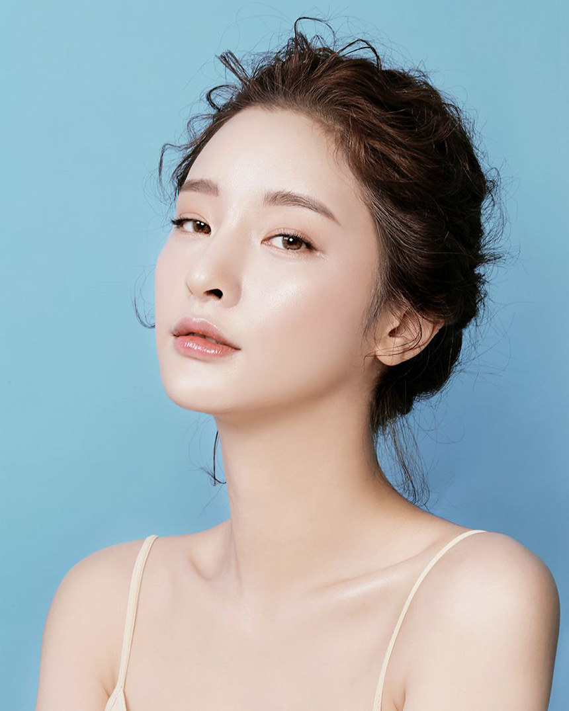
Korean skincare model, Byeon Jeongha, showcases her glass skin from using the 10-step skincare routine.
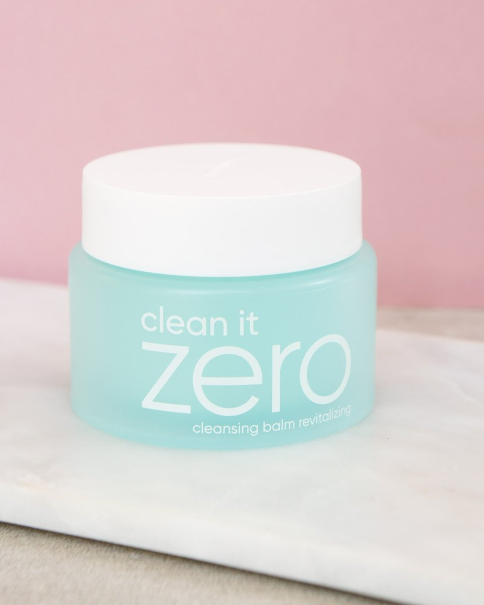
Step 1: Oil-based cleanser, Banila Co Clean It Zero cleansing balm revitalizing.
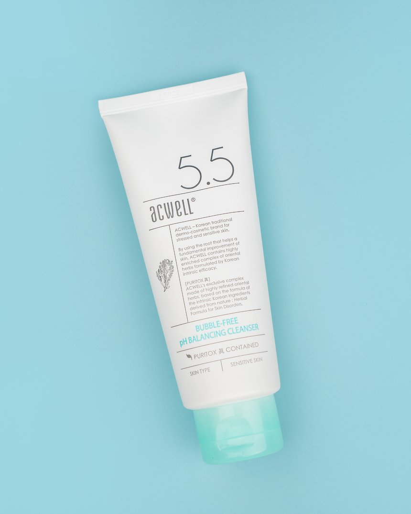
Step 2: Water-based cleanser, Acwell bubble free pH balancing cleanser.
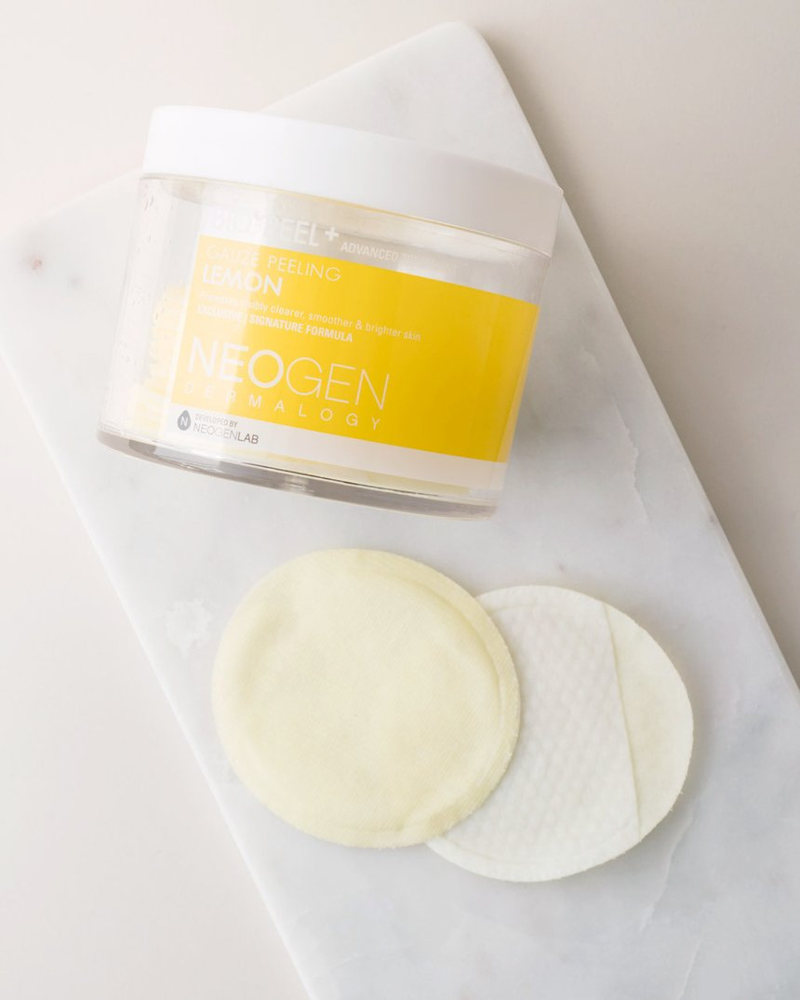
Step 3: Exfoliating, Neogen bio-peel gauze peeling lemon.
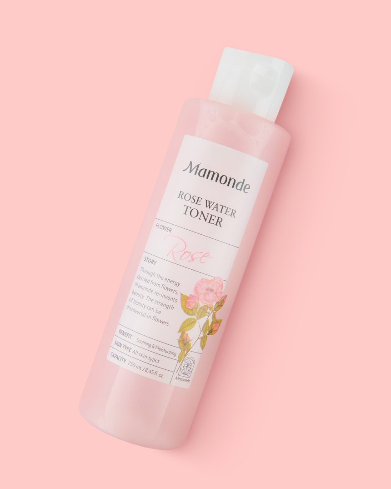
Step 4: Toner, Mamonde rose water toner.
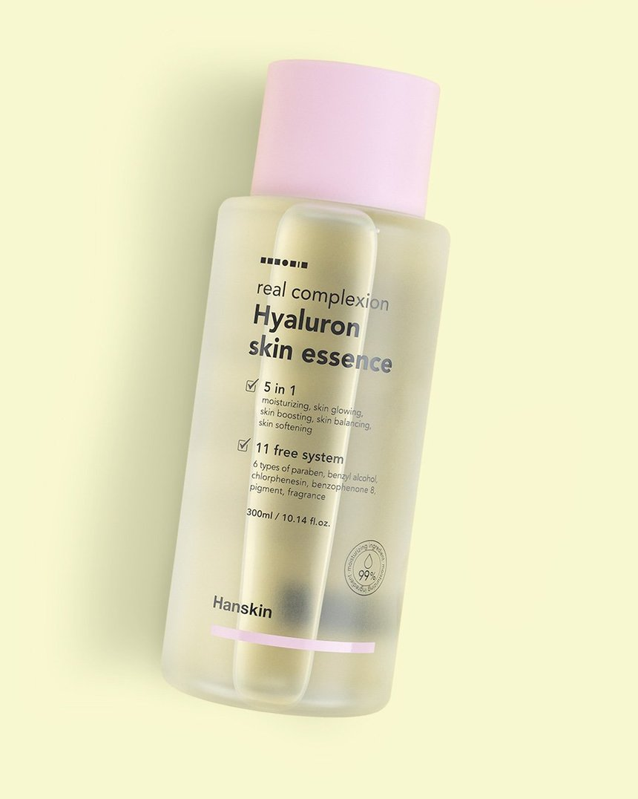
Step 5: Essence, Hanskin hyaluron skin essence.
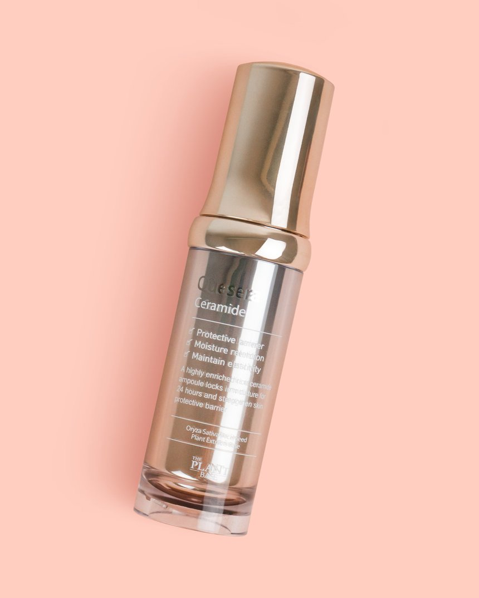
Step 6: Serum, The Plant Base quesera ceramide.
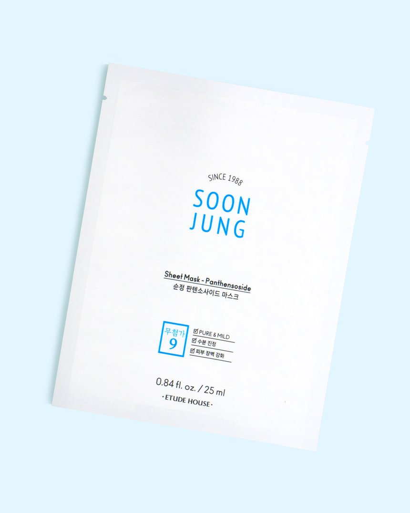
Step 7: Sheet Mask, Etude House Soonjung sheet mask.
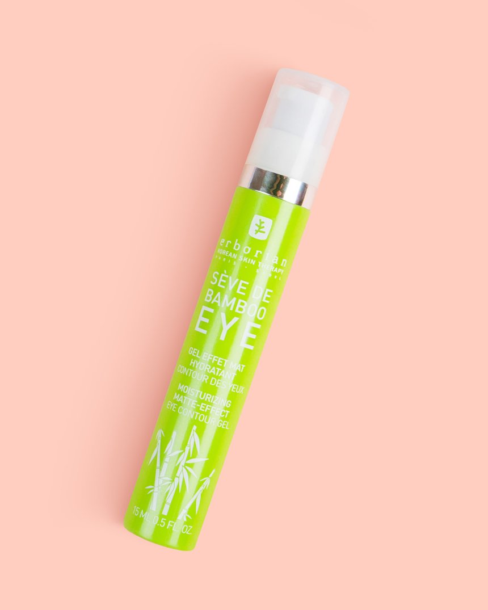
Step 8: Eye Cream, Erborian Seve de Bamboo eye matte.
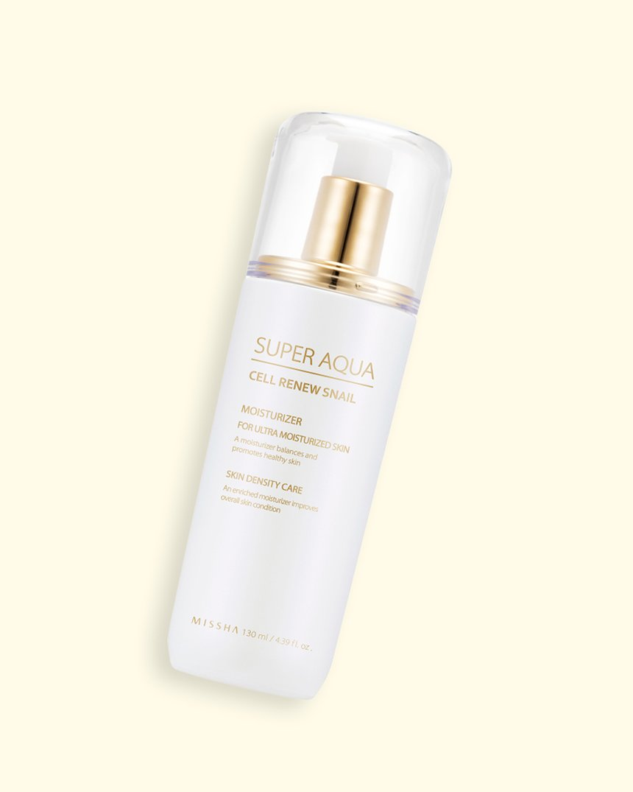
Step 9: Moisturizer, Missha super aqua cell renew snail essential moisturizer.
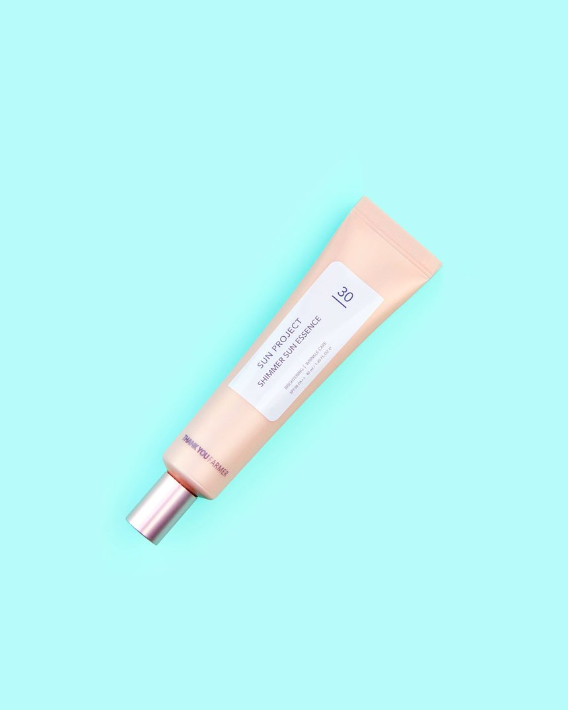
Step 10: Sun Screen, Thank You Farmer sun project shimmer sun essence.
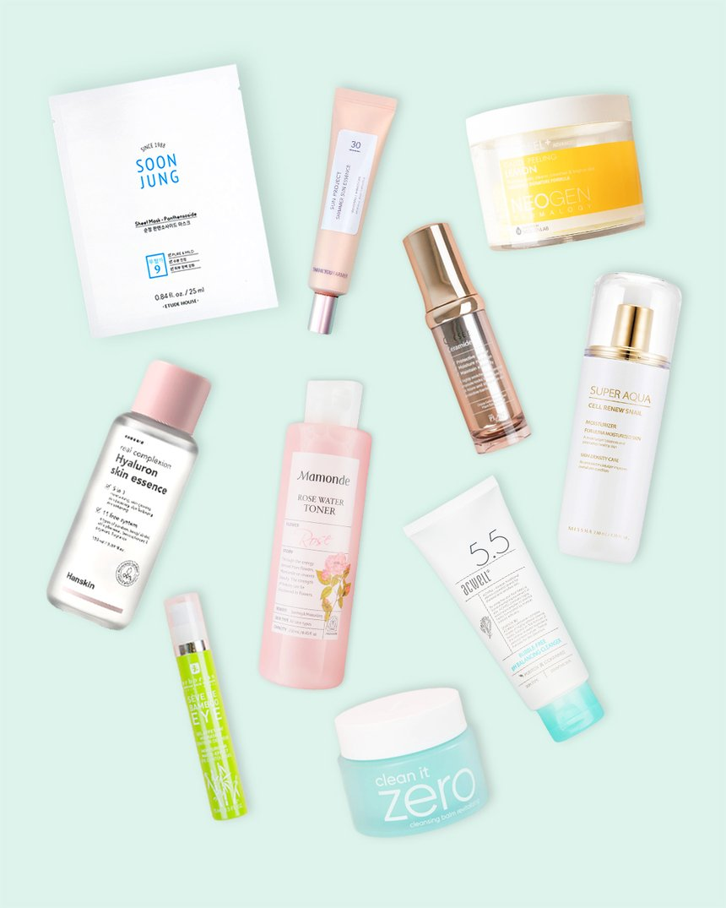
Full skincare set for combination skin. Available on sokoglam.com.